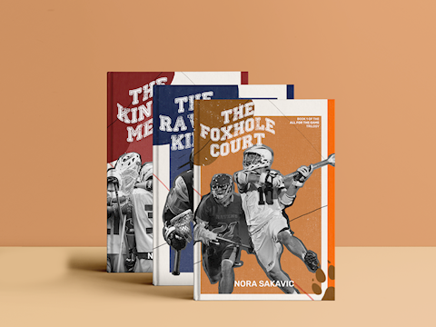
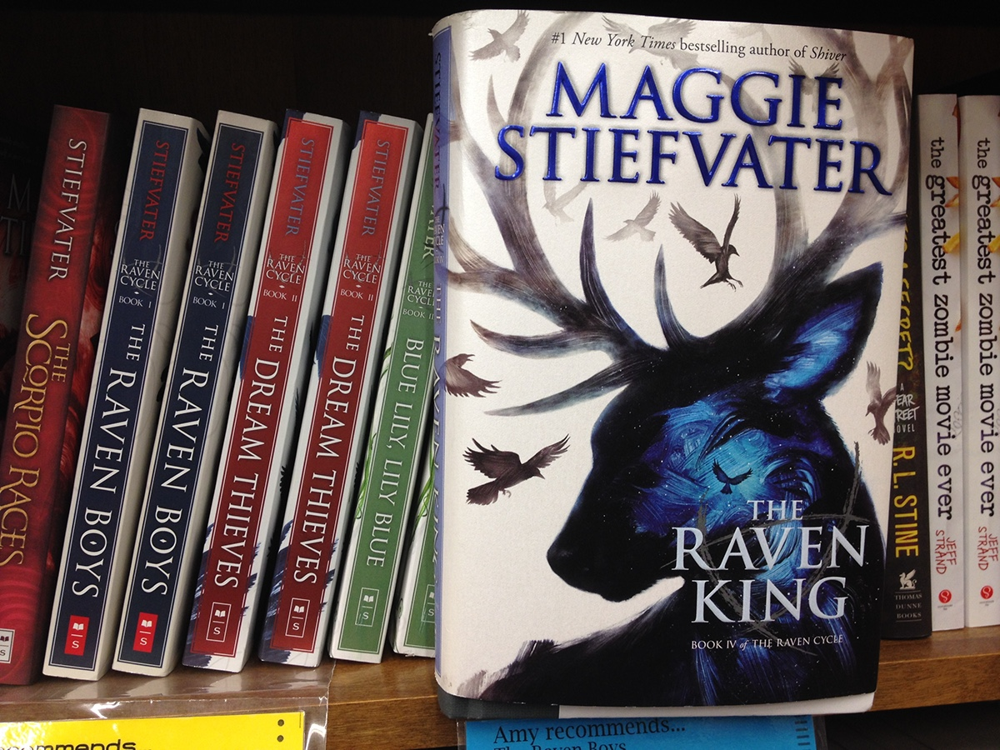
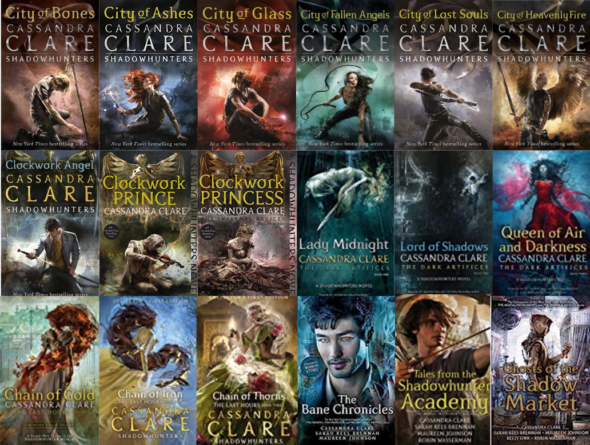

1. All For the Game (by Nora Sakavic) A delicious portrayal of the found family trope in the most broken of people.
2. The Raven Cycle (by Maggie Stiefvater): Everything magic and teenagers, but with beautiful prose and stunning character building, and the wildest plot points (SPOILERS!: one of them is dead, one of them is a king, one of them dreams reality, one of them is poor, one of them amplifies all this 100x).
3. Every Cassandra Clare Series except The Mortal Instruments (...by Cassandra Clare, obviously): Banger. Just-- nothing misses. Each series is unique and done so well. Un-put-downable for any teenager.
I've read some manga before every major exam this week. Particularly, the Teenage Mercenary (gratituous school children violence but... found family so, iykyk), One Punch Man (a comfort re-read) & Bunny by Mona Awad. I started and finished the Apothecary Diaries 15 hrs before this website assignment was due. Please send help. /j
Click the button below to visit boredbutton.com and get insight into what I did for 2 years of my life everytime I was bored and the computer was free to use.